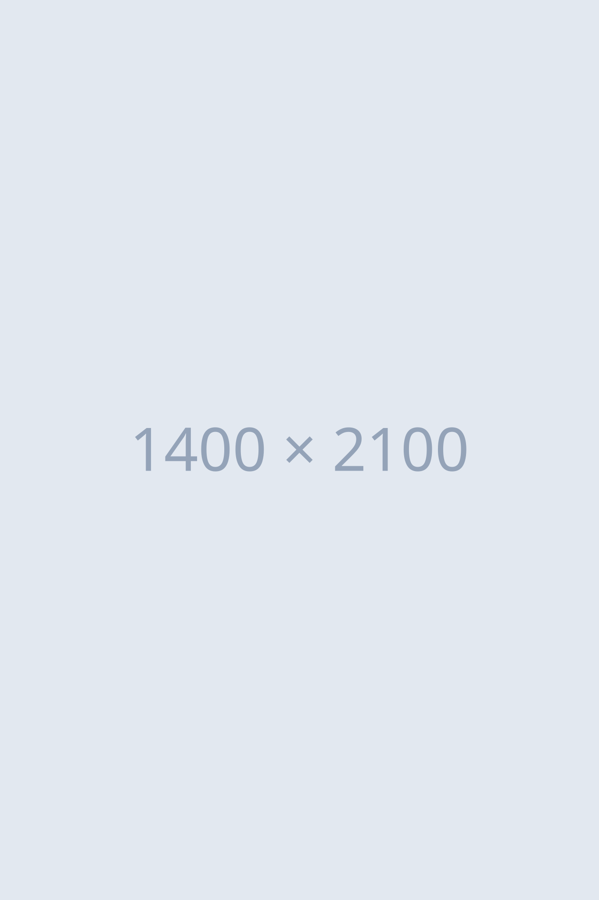
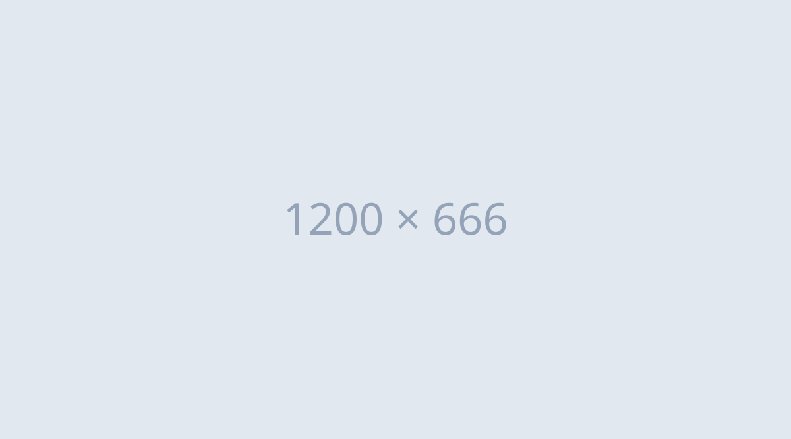
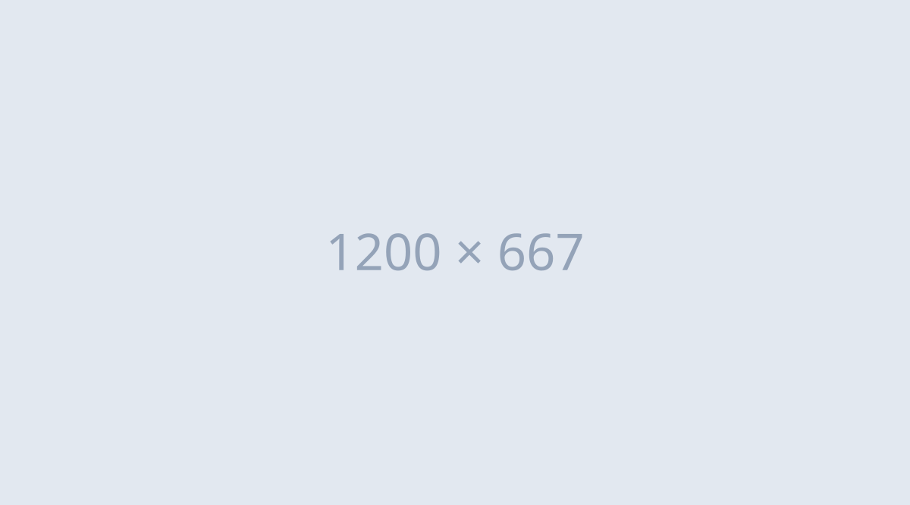
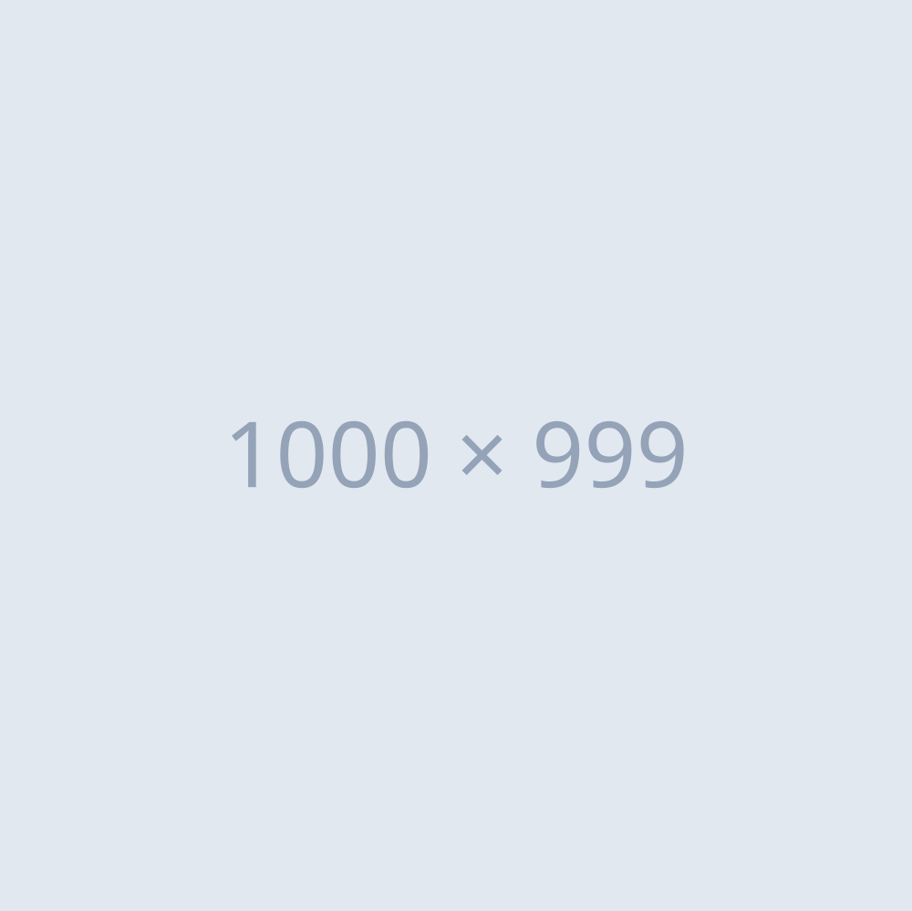

Meridian
+38% sign-ups in the first quarter
Booking January 2027
One person, from the first call to the launch. I help founders and small teams turn a good product into a brand people recognise, and a website that explains it in ten seconds.

Independent Designer
Based in Lisbon
+38% sign-ups in the first quarter

Fully booked for its first eight weeks
Subscriptions up 24% after the redesign
Licences doubled in the launch month


, sets the type
and builds the page . No account managers, no hand-offs.Take one or all three. You see the timeline and the price before we start.
All ServicesA name people can say, a mark they remember and rules your team will actually use.

A site that says what you do in ten seconds, designed and built to be easy to keep up.
One look for a launch or a campaign, carried through every photo, drawing and post.
Eight weeks, four phases. You always know where we are.
Week 1
A 90-minute call and a one-page brief.
Weeks 2–3
Two directions, you pick one.
Weeks 4–7
Design in the open, a review every Friday.
Week 8
Files, guidelines and 30 days of support.
Tidepool — developer portal rebuild, 2025. Same product, same team. Drag the handle to see what changed.
 Before
After
Before
After
“Developers now make their first call before the coffee cools. Nora redrew the whole portal without breaking a single link.”
 Freya Holm
Head of Developer Relations, Tidepool
Freya Holm
Head of Developer Relations, Tidepool
“Nora gave us a name, a mark and a menu that feel like the building. We opened fully booked.”
“She asked better questions than we did. The site finally explains itself, and sign-ups rose by over a third.”
“One person, one conversation, and I never chased a single file. She drew a brand our typefaces deserve.”
Booking January 2027 · 2 spots left
A small, sharp identity for a product that launches soon.
Fixed Price€4,800
Two weeks
Identity and website together, designed as one thing.
Starting From€9,500
Six to ten weeks
A designer on call for the work that never stops.
Per Month€3,200
Four days a month